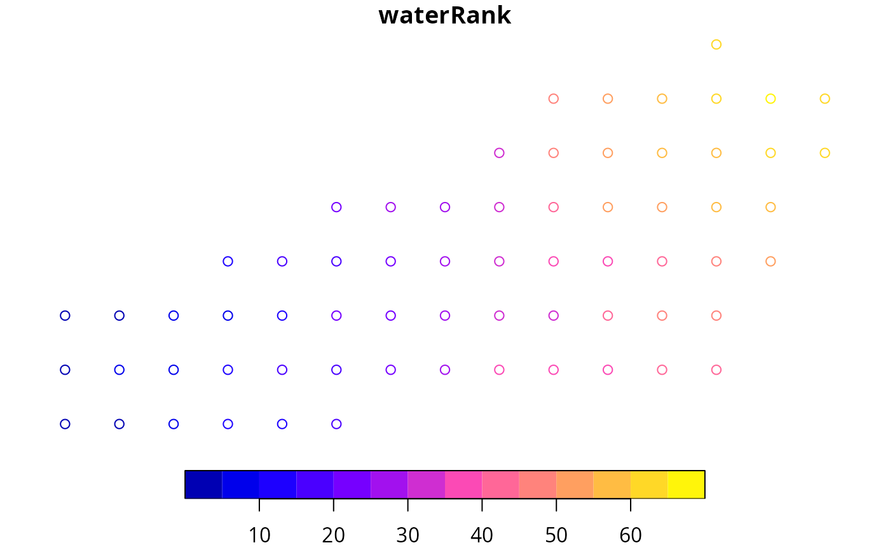
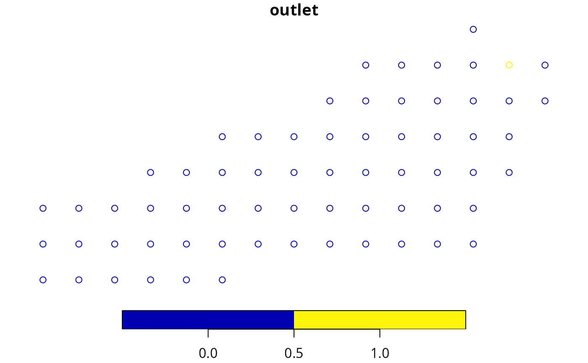
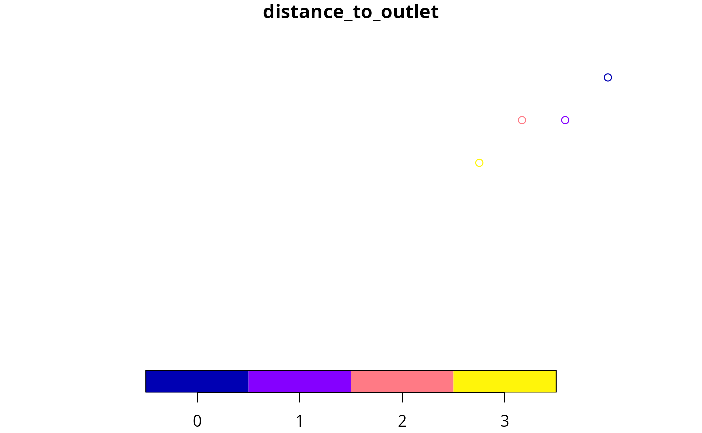

Determines overland routing given a raster definition and a set of target locations for watershed simulations. If channel is supplied, it also determines channel routing.
Usage
overland_routing(
r,
sf,
channel_flow_speed = 1,
subwatersheds = FALSE,
max_overlap = 0.2
)
cell_neighbors(r, sf)Arguments
- r
An object of class
SpatRaster, defining the raster topology.- sf
An object of class
sfwith the following columns:geometry: Spatial point geometry corresponding to cell centers.elevation: Elevation above sea level (in m).channel: An optional logical (or binary) vector indicating cells corresponding to river channel.
- channel_flow_speed
Average flow speed in the channel (in m/s).
- subwatersheds
A boolean flag to define watershed subunits.
- max_overlap
Maximum proportion of overlapping cells for watershed subunits to be considered independent. Lower values will normally produce larger subunits.
Value
An object of class sf describing overland routing parameters and outlet cells:
geometry: Spatial point geometry corresponding to cell centers.elevation: Elevation above sea level (in m).waterRank: Ranked elevation in decreasing order.waterOrder: A vector with the cell's processing order for overland routing (based on elevation). First value corresponds to the row index of the first processed cell, second value corresponds to the row index of the second processed cell and so forth.queenNeigh: A list where, for each cell, a vector gives the identity of neighbours (up to eight).waterQ: A list where, for each cell, a vector gives the proportion of overland flow to each neighbour.channel: A logical vector indicating channel cells.outlet: A logical vector indicating outlet cells.target_outlet: Index of the outlet cell to which the channel leads (NAfor non-channel cells).distance_to_outlet: Distance to the target outlet in number of cells (NAfor non-channel cells).outlet_backlog: For each outlet, a backlog vector of watershed export (NAfor non-outlet cells).subwatershed: Integer vector indicating watershed subunits (NAifsubwatersheds = FALSE).
Details
If channel is not supplied, then cells where all neighbors are at higher elevation are considered outlet cells.
If channel is supplied, then outlets are channel cells in the domain limits and not having a neighbor channel at lower elevation. In this case,
model simulations will include channel routing towards outlet cells.
If defining watershed subunits is requested (i.e. if subwatersheds = TRUE), subunits are defined first by determining the area draining to each channel or outlet cell. Then, those areas are progressively merged if one is nested into the other or when the proportion of overlapping cells is lower than
a pre-specified threshold (i.e. larger than max_overlap). A given cell cannot belong to more than one subunit. Therefore, the overlap between the final subwatersheds is eliminated by deciding the main subwatershed for each cell, the proportion of overland flow to neighbors is modified for cells in located in subunit boundaries.
Examples
# Load example watershed data
data("example_watershed")
# Get bounding box to determine limits
b <- sf::st_bbox(example_watershed)
b
#> xmin ymin xmax ymax
#> 401430 4671870 402830 4672570
# Define a raster topology, using terra package,
# with the same CRS as the watershed. In this example cells have 100 m side.
# Coordinates in the 'sf' object are assumed to be cell centers
r <-terra::rast(xmin = 401380, ymin = 4671820, xmax = 402880, ymax = 4672620,
nrow = 8, ncol = 15, crs = "epsg:32631")
# Generate overland routing
or <- overland_routing(r, example_watershed)
# Plot elevation
plot(or["elevation"])
# Rank (decreasing elevation) for processing
plot(or["waterRank"])

# Plot outlet cells
plot(or["outlet"])

# Define 4-cell channel
example_watershed$channel <- FALSE
example_watershed$channel[c(6, 11, 12, 20)] <- TRUE
# Generate overland and channel routing
or_channel <- overland_routing(r, example_watershed)
# Plot outlet and distance to outlet
plot(or_channel["outlet"])
plot(or_channel["distance_to_outlet"])
